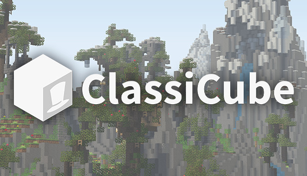
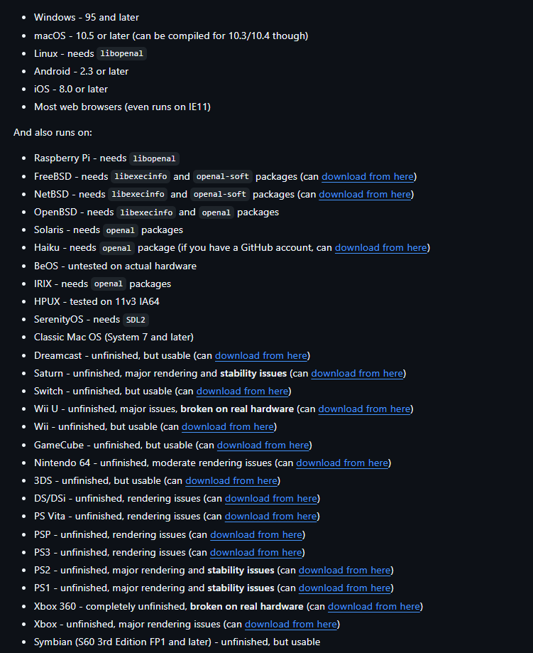

ClassiCube

ClassiCube replicates the 2009 Minecraft Classic (AKA alpha) client and game, while offering optional enhancements to improve gameplay
Classicube is another open-source clone of minecraft, replicating the original Minecraft Classic experience, using clean room reverse engineering approach, which is a method of copying a design by reverse engineering and then recreating it without infringing any of the copyrights associated with the original design. Classicube was originally written in C#, before being ported to C language.
As Classicube exists to clone (an early) version of minecraft, its not very much different. There are, of course, some quality-of life improvements to add a bit of fuctionality and stability in terms of gameplay.
General Gameplay:
Vanilla Classicube has both a Creative and a Survival mode. Other gameplay modes are avaliable via mods.
Platform Support:
One of the areas that Classicube really stands out in, is the sheer amount of platforms that have direct support or working experimental ports.

THATS 34 PLATFORMS!